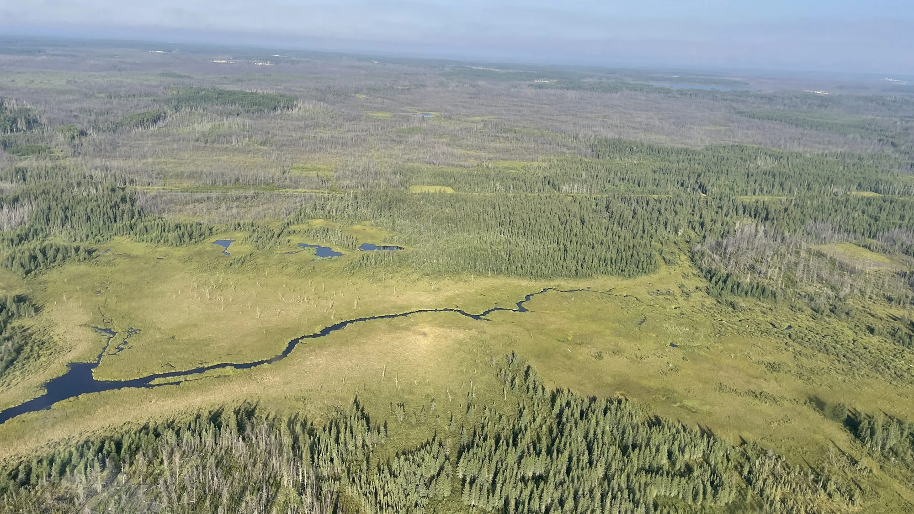
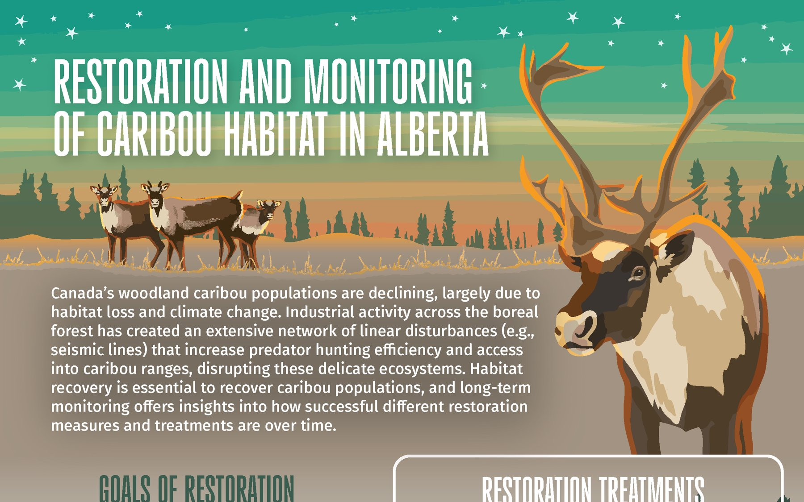
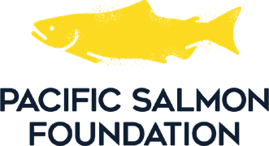
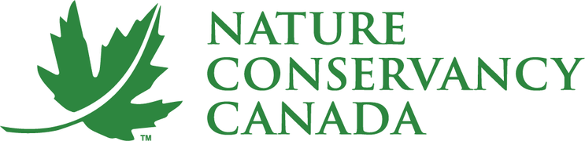
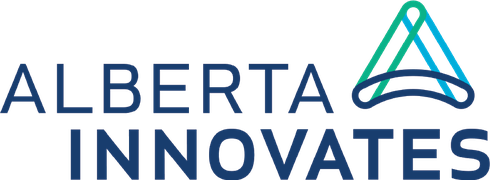
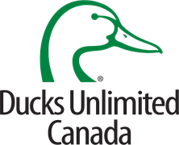
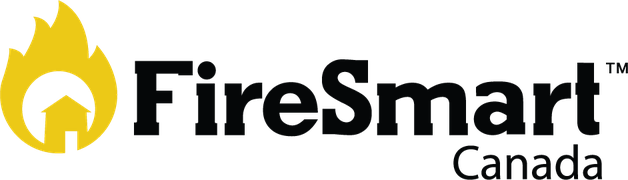
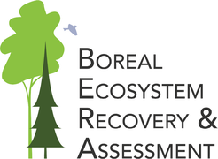
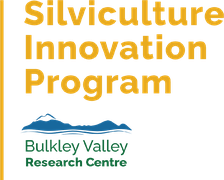
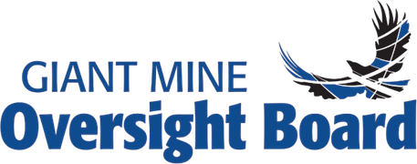

Communication scientifique · Canada
Relier le savoir à la pratique
Nous transformons une science complexe en visuels, en ateliers et en rapports en langage clair, sur lesquels les gens peuvent agir.
Cinq façons de mettre la science au travail
Cinq domaines, vingt-trois services. Commencez par celui qui ressemble à votre problème.
-
5 services
Infographies et illustration scientifique
La science complexe rendue visible : figures, infographies, notes d'information, zines, cartes narratives.
Découvrir → -
3 services
Synthèse des connaissances
Des données dispersées, transformées en un document sur lequel un décideur peut agir.
Découvrir → -
4 services
Conseil stratégique
Des structures, des plans et des feuilles de route, bâtis avec les personnes qui s'en serviront.
Découvrir → -
7 services
Ateliers et animation
Des séances en direct, en personne ou en ligne, qui font avancer une conversation vers un résultat.
Découvrir → -
4 services
Éducation et vulgarisation scientifique
Des programmes et du matériel qui portent la science vers un public plus large.
Découvrir →


La science, rendue vivante
Chez Fuse, nous allions notre formation en science et notre passion pour la créativité pour donner vie au savoir.
Nous synthétisons, traduisons et visualisons le message clé pour donner aux dirigeants les moyens de prendre des décisions qui comptent.
- ScienceChaque message repose sur des données probantes.
- PassionCurieux de nature, animés par le besoin de comprendre.
- ValeursNous travaillons avec les personnes qui s'en serviront.
- CréativitéDes visuels, des médias et des démarches dont on se souvient.
Une réalisation, en grand

D'un programme de recherche à une page que les gens lisent
- 1Le problèmeDes années de recherche sur la restauration des lignes sismiques, dispersées dans des rapports que peu de praticiens avaient le temps de lire.
- 2Ce que nous avons faitNous avons condensé les objectifs, les traitements et les données probantes en une page illustrée, tirée de la science.
- 3Le résultatUn visuel que les gestionnaires du territoire, l'industrie et les communautés peuvent utiliser dans la même réunion.
Les organisations avec lesquelles nous travaillons












Curieux de nature
Nous sommes curieux de nature et animés par le désir de comprendre nos clients et leurs objectifs. Notre histoire commence avec quatre diplômés en sciences de la University of Alberta, passionnés et tous convaincus qu'il était possible de relier la recherche à la pratique.
- 2007L'idée prend racine
- EdmontonSiège social
- C.-B. · Ont.Bureaux satellites
Nous aidons les dirigeants à prendre des décisions qui comptent.
Parlez-nous de la science que vous voulez voir mise en pratique.